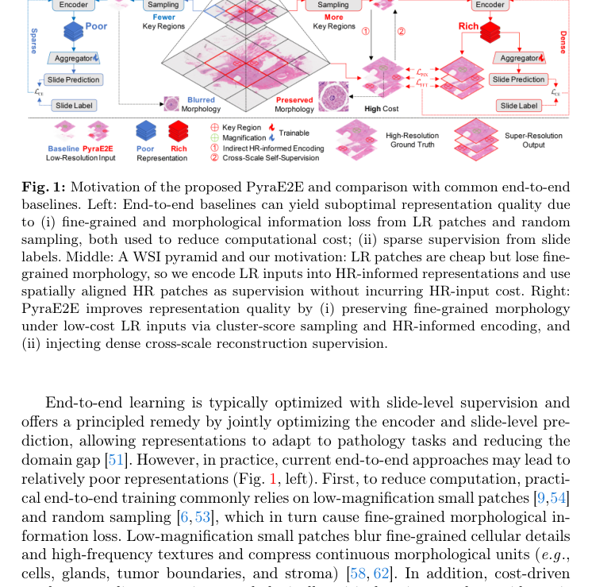

* Equal contribution. † Corresponding author.
Whole-slide image (WSI) analysis often depends on encoders pretrained on natural images, which leaves a domain gap for histopathology. Fully end-to-end training is also expensive: gigapixel slides cannot be encoded densely, random sampling discards fine morphology, and slide-level labels provide only sparse supervision. PyraE2E turns the native WSI resolution pyramid into dense cross-scale supervision so that the encoder and aggregator can be trained jointly.

As shown in Fig. 2, Cluster-Score Sampling first selects informative low-resolution (LR) patches at low magnification. Spatially aligned high-resolution (HR) patches at higher magnification serve as reconstruction targets. A shared Global-Local Partitioned encoder processes the LR patches with HR-informed features, while an SR reconstruction head and a slide-level prediction head are optimized together under a bounded computational budget. The super-resolution task supplies dense morphological supervision that slide-level labels alone cannot provide.